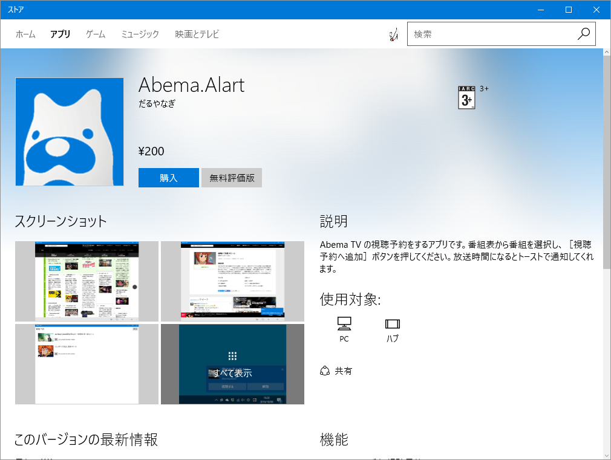
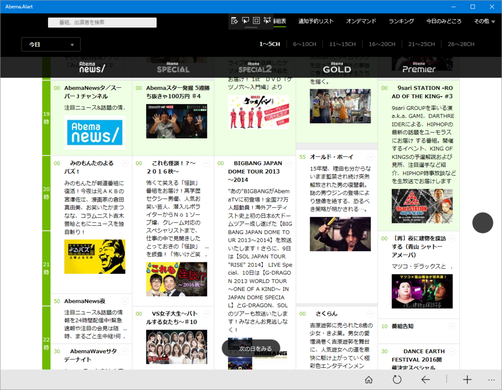
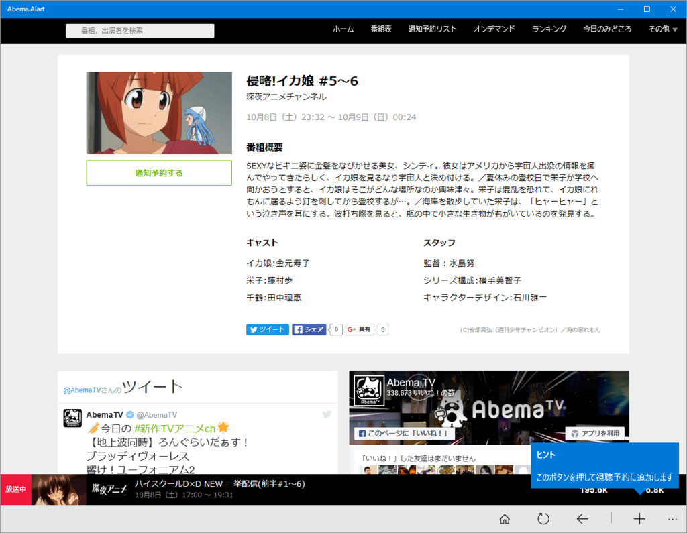
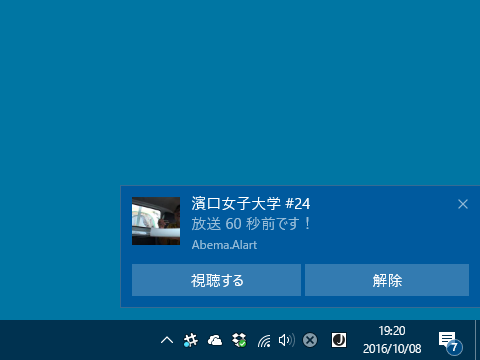
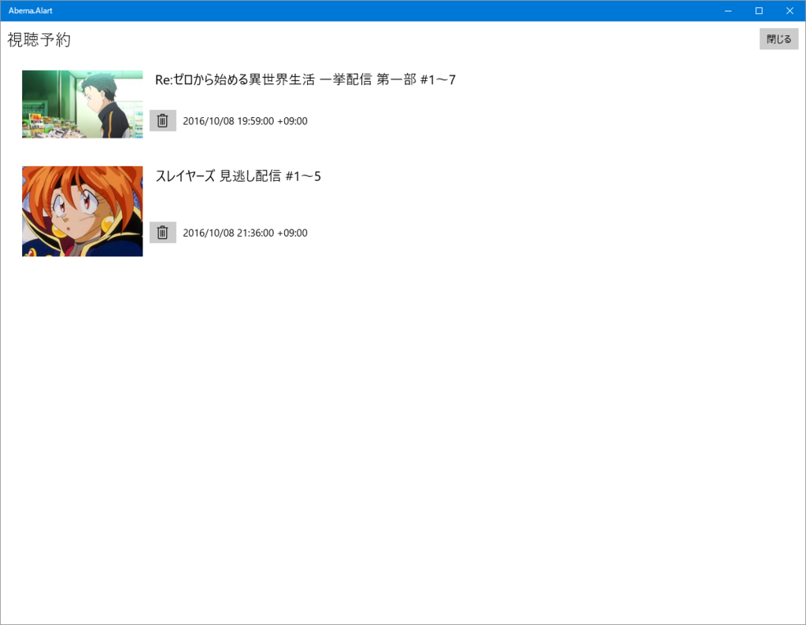

AbemaTV の視聴予約をする UWP アプリ「Abema.Alart」を作りました。
執筆日時：

200円って書いてあるけど、「無料評価版」を使えばずっとタダです。
最近“だるろぐ”の収益が落ちてきているので、ビール代をカンパしてください。
「Abema.Alart」の使い方

起動するとこういう画面が出るので、好みの番組を選択して――

番組の詳細画面で［視聴予約する］ボタンをクリック（初回利用時にバルーンで教えてくれます）。ダイアログで「登録しました」って出れば成功（過去の番組であれば失敗するはずです。重複登録のチェックを忘れていたので、次のバージョンにはつける予定）。

時間になると、トーストで通知してくれます。［視聴する］ボタンを押すと既定のブラウザーで番組を閲覧できます。

視聴予約の取り消しにも対応しています。
でも、週末高松・神戸に遊びにっている間、船の中でいいアイデアが浮かびましたので、また改訂版を出すつもり。次回はもう少しエレガントになっていると思います。
失敗したこと
単語の綴り間違ってた。